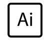
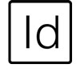
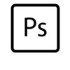
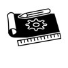

I have focuses my life path towards design, creation and entrepeneurship. I am looking to develop all the skills and things I have learned throught my life. Each aspect is helping to achieve my goal of becoming the best product designer I can be
   